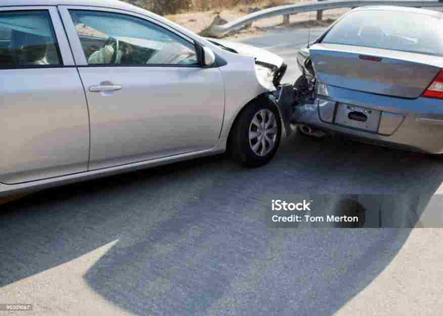
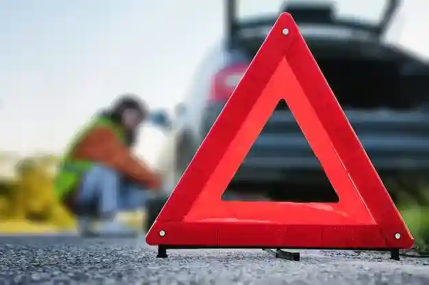
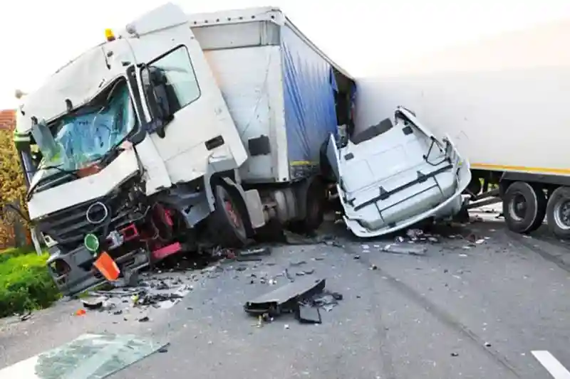
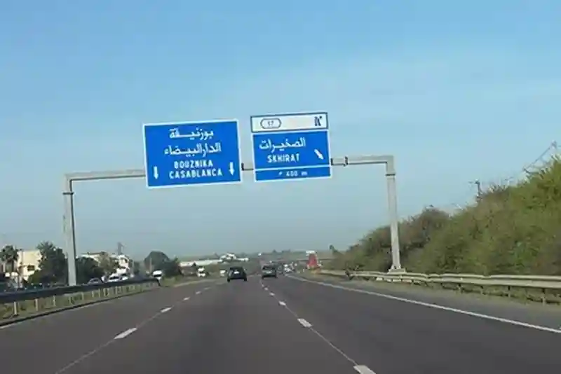
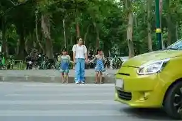
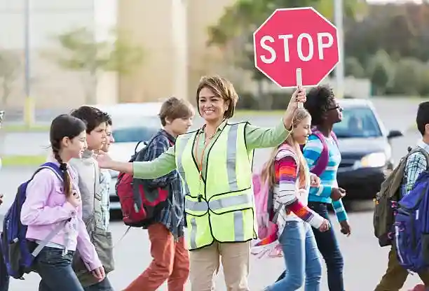
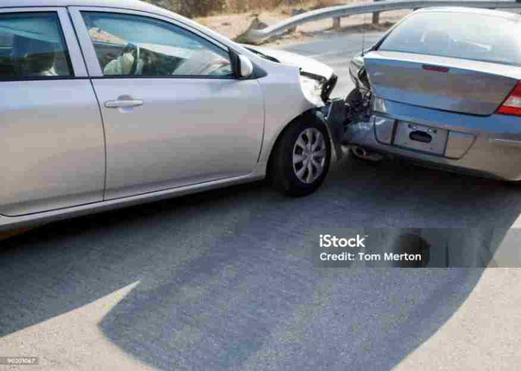
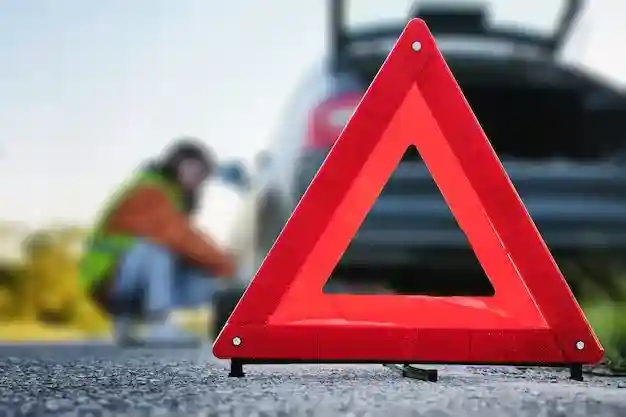
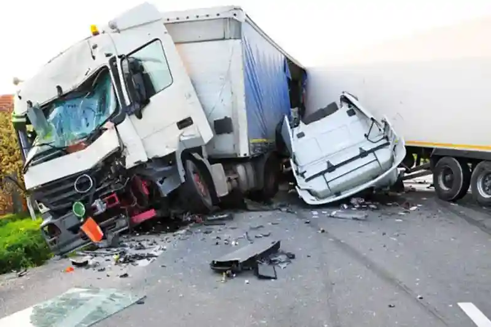
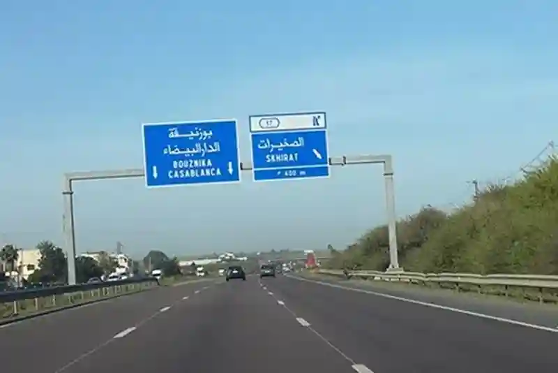
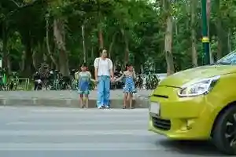
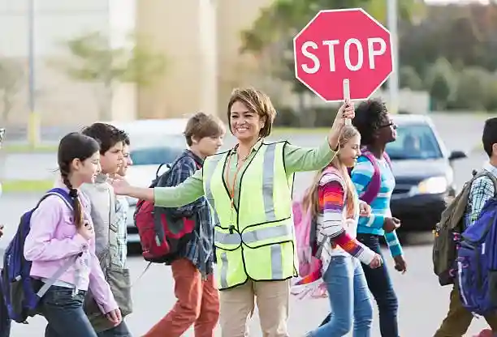
Redesigning the analytics interface with improved data visualization components.
Performance improvements and battery efficiency enhancements.
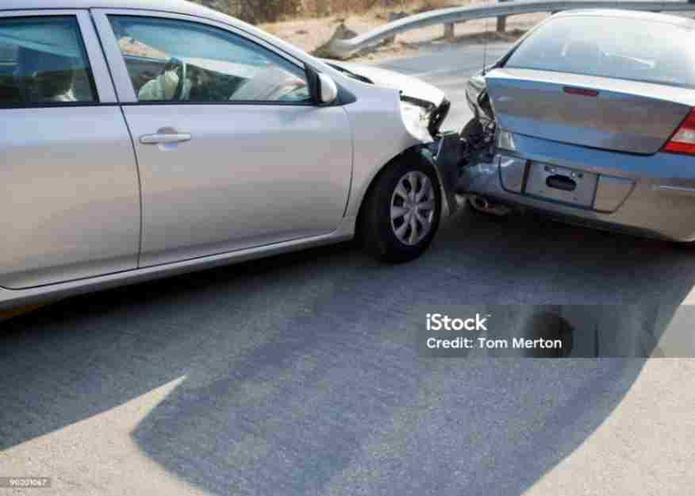
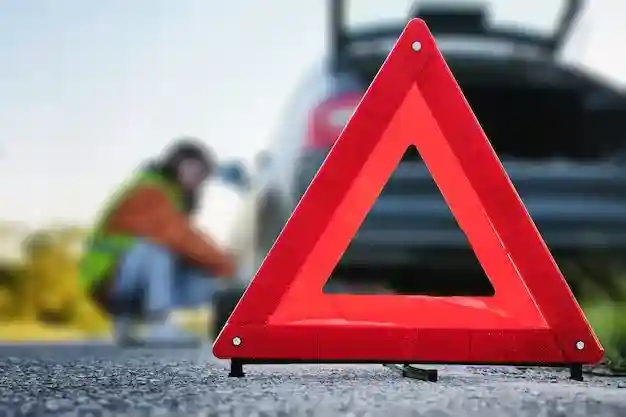
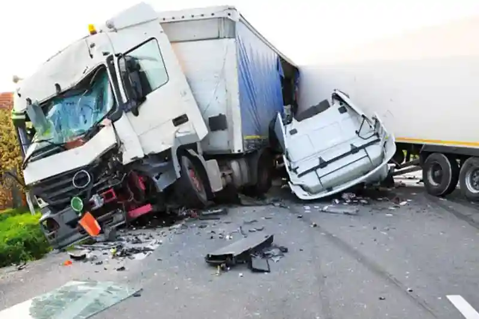
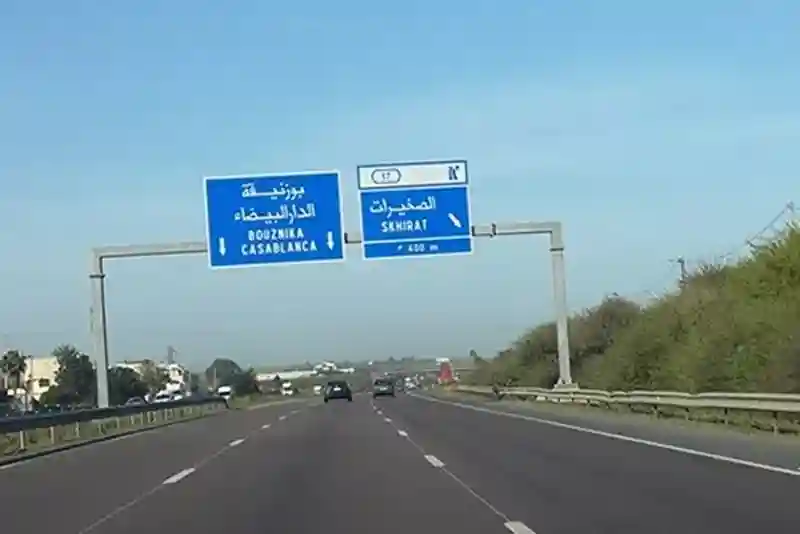
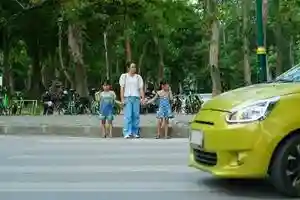
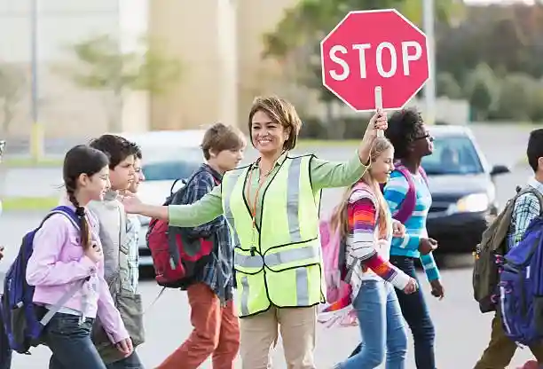
NARSA (Agence Nationale de la Sécurité Routière) est une institution marocaine créée en 2004 pour améliorer la sécurité routière dans le pays. Elle est chargée de : Contrôler le respect du code de la route. Gérer les permis de conduire. Sensibiliser les usagers de la route. Inspecter les véhicules (ex : contrôle technique). C'est l'organisme responsable des radars automatiques, des campagnes de prévention routière, et des examens pour le permis de conduire au Maroc..
Redesigning the analytics interface with improved data visualization components.
Performance improvements and battery efficiency enhancements.
Le Maroc fait face à plusieurs défis en matière de sécurité routière, notamment le non-respect du code de la route, l’excès de vitesse et le manque d’infrastructures adaptées. Malgré les efforts déployés, le nombre d’accidents reste élevé, en grande partie à cause du comportement des conducteurs et de l’insuffisance du contrôle routier. L’amélioration de la sensibilisation, le renforcement des sanctions et l’investissement dans des routes plus sûres sont essentiels pour réduire le nombre de victimes et garantir une circulation plus sécurisée.